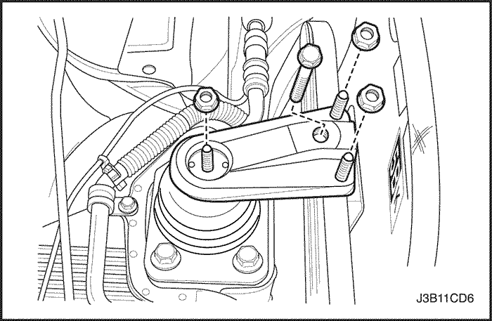
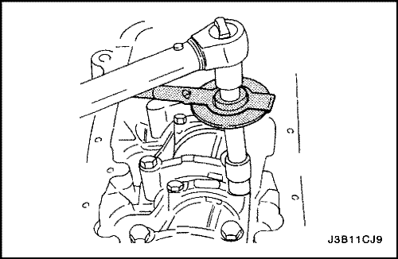

Cárter del aceite
Procedimiento de desmontaje
- Desconecte el cable negativo de la batería.
- Vacíe el aceite del cárter motor.
- Quite del colector de escape las tuercas de fijación del tubo de escape flexible.
- Quite del convertidor catalítico o del tubo de conexión las tuercas de fijación del tubo de escape flexible.
- Desmonte el tubo de escape flexible.
- Quite los tornillos de fijación que unen la brida del cárter del aceite a la caja de cambios.

- Quite los tornillos de fijación del cárter del aceite.
- Desmonte el cárter del aceite del bloque del motor.
Procedimiento de limpieza
- Limpie la superficie de cierre del cárter del aceite.
- Limpie la superficie de cierre del bloque del motor.
- Limpie los tornillos de fijación del cárter del aceite.
- Limpie los taladros para los tornillos de fijación del cárter del aceite en el bloque del motor.
- Limpie el rascador del cárter del aceite.
Procedimiento de montaje
- Recubra la junta nueva del cárter de aceite con un compuesto sellante.
Importante: Después de aplicar junta líquida al cárter del aceite, monte el cárter antes de 5 minutos.
- Monte el cárter del aceite en el bloque del motor.
- Coloque los tornillos de fijación del cárter del aceite.
Apretar
Par de apriete 10 N•m (89 lb-pulg.).
- Coloque los tornillos de fijación que unen la brida del cárter del aceite a la caja de cambios.
Apretar
Apriete los tornillos de fijación de la brida del cárter del aceite a la caja de cambios hasta 75 N•m (55 lb-pie).
- Monte el tubo de escape flexible.
- Coloque las tuercas de fijación del tubo de escape flexible en el colector de escape.
Apretar
Apriete las tuercas de fijación del tubo de escape flexible al colector de escape hasta 35 N•m (26 lb-pie).
- Coloque las tuercas de fijación del tubo de escape flexible en el convertidor catalítico o el tubo de conexión.
Apretar
Apriete las tuercas de fijación del tubo de escape flexible al convertidor catalítico o al tubo de conexión hasta 35 N•m (26 lb-pie).
- Monte el tapón de drenaje del cárter del aceite.
Apretar
Apriete el tapón de drenaje del cárter del aceite hasta 35 N•m (26 lb-pie).
- Vuelva a llenar de aceite el cárter motor.
Bomba de aceite
Herramientas necesarias
Manómetro KM-498-B
Adaptador KM-135
Procedimiento de comprobación de la presión del aceite del motor
- Desmonte la rueda delantera derecha y la chapa guardabarros del paso de rueda.
- Desenchufe el conector del presostato del aceite.
- Monte el adaptador KM-135 en el lugar del presostato del aceite.
- Conecte el manómetro KM-498-B al adaptador.
- Ponga en marcha el motor y compruebe la presión del aceite a velocidad de ralentí y a una temperatura del motor de 80°C (176°F). La presión mínima del aceite debe ser de 30 kPa (4,35 lbs/pulg2).
- Para el motor y retire el manómetro KM-498-B y el adaptador KM-135.
- Monte el presostato del aceite.
Apretar
Apriete el presostato del aceite hasta 40 N•m (30 lb-pie).
- Enchufe el conector del presostato del aceite.
Procedimiento de desmontaje
- Desconecte el cable negativo de la batería.
- Desmonte la bomba de la dirección asistida, si el vehículo dispone la misma. Consulte la Sección 6A, "Sistema de la dirección asistida".
- Desmonte la correa de distribución. Consulte el apartado "Correa de distribución" de esta sección.
- Desmonte la tapa trasera de la correa de distribución. Consulte el apartado "Tapa trasera de la correa de distribución" de esta sección.
- Desenchufe el conector del presostato del aceite.
- Desmonte el cárter del aceite. Consulte el apartado "Cárter del aceite" de esta sección.
- Quite los tornillos del tubo de aspiración de aceite y del soporte de apoyo.
- Desmonte el tubo de aspiración de aceite.
- Quite los tornillos de retención de la bomba del aceite.
- Con cuidado, separe la bomba de aceite y la junta del bloque del motor y del cárter del aceite.
- Desmonte la bomba de aceite.
Procedimiento de inspección
- Limpie las superficies de acoplamiento de la junta con el bloque del motor y la bomba de aceite.
- Quite el tornillo de la válvula de descarga de seguridad.
- Desmonte la válvula de descarga de seguridad y el muelle.
- Desmonte el retén que une la bomba de aceite al cigüeñal.
- Quite los tornillos de la tapa trasera de la bomba de aceite.
- Quite los tornillos de la tapa trasera de la bomba de aceite.
- Limpie el alojamiento de la bomba de aceite y todas sus piezas.
- Compruebe todas las piezas de la bomba de aceite en busca de indicios de desgaste. Consulte el apartado "Especificaciones del motor" de esta sección. Sustituya las piezas desgastadas de la bomba de aceite.
Aviso: Llene la cavidad de los engranajes de la bomba de aceite con vaselina para garantizar el cebado de la misma o, de lo contrario, podrían ocasionarse daños al motor.
- Recubra todas las piezas de la bomba de aceite con aceite limpio del motor. Monte las piezas de la bomba de aceite.
- Aplique Loctite® 242 a los tornillos de la tapa trasera de la bomba de aceite y monte la tapa con los tornillos.
Apretar
Apriete los tornillos de la tapa trasera de la bomba del aceite hasta 8 N•m (71 lb-pulg.).
- Monte la válvula de descarga de seguridad, el muelle, la arandela y el tornillo.
Apretar
Apriete el tornillo de la válvula de descarga de seguridad hasta 30 N•m (22 lb-pie).
Procedimiento de montaje
- Aplique Loctite® 242 a los tornillos de la bomba de aceite y un sellante de endurecimiento a temperatura ambiente (RTV) a la nueva junta de la bomba.
- Coloque la junta en la bomba de aceite y monte la bomba en el bloque del motor con los tornillos.
Apretar
Apriete los tornillos de la bomba de aceite hasta 10 N•m (89 lb-pulg.).
- Monte un retén nuevo entre la bomba de aceite y el cigüeñal. Recubra el labio del retén con una capa delgada de grasa.
- Recubra las roscas de los tornillos del tubo de aspiración de aceite y del soporte de apoyo con Loctite® 242.
- Monte el tubo de aspiración de aceite con sus tornillos.
Apretar
Apriete los tornillos del soporte de apoyo y del tubo de aspiración de aceite hasta 10 N•m (89 lb-pulg.).
- Monte el cárter del aceite. Consulte el apartado "Cárter del aceite" de esta sección.
- Enchufe el conector del presostato del aceite.
- Monte la tapa trasera de la correa de distribución. Consulte el apartado "Tapa trasera de la correa de distribución" de esta sección.
- Monte la correa de distribución. Consulte el apartado "Correa de distribución" de esta sección.
- Monte la bomba de la dirección asistida, si el vehículo dispone la misma. Consulte la Sección 6A, "Sistema de la dirección asistida".
- Conecte el cable negativo de la batería.
Fijación del motor
Herramientas necesarias
Fijación del soporte del motor DW110-060
Procedimiento de desmontaje
- Desconecte el cable negativo de la batería.
- Desmonte el conjunto de filtro del aire. Consulte "Conjunto del filtro de aire" de esta sección.
- Sujete el conjunto del motor utilizando la fijación del soporte del conjunto motor DW110-060.
- Quite los tornillos y las tuercas de la fijación del motor.
- Desmonte la fijación del motor.
Procedimiento de montaje
- Monte la fijación del motor.
- Coloque los tornillos y las tuercas de la fijación del motor.
Apretar
Apriete los tornillos y las tuercas de la fijación del motor hasta 55 N•m (41 lb-pie).
Motor
Procedimiento de desmontaje
- Desmonte el fusible de la bomba de combustible.
- Ponga el motor en marcha. Después de calarse, arránquelo durante 10 segundos para liberar la presión del sistema de combustible.
- Vacíe el aceite del motor.
- Desconecte el cable negativo de la batería.
- Vacíe el refrigerante del motor.
- Desmonte la tapa del motor. Consulte el apartado "Tapa del motor" de esta sección.
- Desmonte el conjunto de filtro del aire. Consulte "Conjunto del filtro de aire" de esta sección.
- Desenchufe los conectores del cableado eléctrico.
- Desenchufe el conector del ETC.
- Desenchufe el conector de la válvula de solenoide de purga.
- Desenchufe el conector del alternador.
- Desenchufe el conector del interruptor de presión del aire acondicionado.
- Desenchufe el conector de IACV.
- Desenchufe el conector del TPS.
- Desenchufe el conector del MAP.
- Desenchufe el conector del presostato del aceite.
- Desenchufe los conectores de los inyectores.
- Desenchufe el conector del CMP.
- Desenchufe el conector del VIS.
- Desenchufe el conector del sensor de picado de las bielas.
- Desenchufe el conector del sensor de oxígeno.
- Desenchufe el conector del DIS.
- Desenchufe los conectores del ECM.
- Desenchufe el conector del CKP.
- Desconecte el cable del motor de arranque.

- Retire el cable del cuerpo del acelerador.
- Desconecte el tubo de combustible de la rampa de inyectores.
- Para desmontar la correa de accionamiento de los accesorios, haga girar el tornillo de la polea del tensor en el sentido de las agujas del reloj con la ayuda del DW110-080.
- Desconecte el manguito de vacío del servofreno.
- Desmonte el compresor del A/A. Consulte la Sección 7B, Sistema de calefacción, ventilación y aire acondicionado de control manual.
- Desmonte el tubo de la dirección asistida de la bomba. Consulte la Sección 6B, Bomba de la dirección asistida.
- Desconecte los manguitos del calefactor.
- Desconecte los manguitos superior/inferior del refrigerante del radiador.
- Desconecte los manguitos del refrigerante del cuerpo del acelerador.
- Desmonte la polea del cigüeñal.
- Quite los tornillos del convertidor de par de la caja de cambios, en caso de que el vehículo esté equipado con caja de cambios automática.
- Desmonte el motor de arranque. Consulte la sección 1E, Sistema eléctrico del motor.
- Quite los tornillos de la campana de la caja de cambios.
- Sujete la caja de cambios con un gato de piso.
- Monte el dispositivo de elevación del motor.

- Quite los tornillos y las tuercas de sujeción para desconectar el motor y su fijación derecha.
- Desmonte del bloque del motor y de la fijación del bastidor el soporte de fijación derecho del motor.
- Separe el bloque del motor de la caja de cambios.
- Desmonte el motor.
Procedimiento de montaje
- Monte el motor en el compartimento motor.
- Alinee los pasadores de alineación del motor con la caja de cambios.
- Ponga los tornillos de la campana de la caja de cambios.
Apretar
Apriete los tornillos de la campana de la caja de cambios hasta 75 N•m (55 lb-pie).
- Coloque los tornillos que unen la brida del cárter del aceite a la caja de cambios.
Apretar
Apriete los tornillos de fijación de la brida del cárter del aceite a la caja de cambios hasta 75 N•m (55 lb-pie).
- Monte la fijación derecha del motor en la fijación del bloque del motor y la fijación del bastidor.
- Monte el soporte de fijación derecho del motor y coloque las tuercas y los tornillos de retención.
Apretar
Apriete los tornillos y las tuercas de retención del soporte de fijación del motor hasta 55 N•m (41 lb-pie).
- Retire el gato de piso empleado para sujetar la caja de cambios.
- Retire el dispositivo de elevación del motor.
- Coloque los tornillos del convertidor de par de la caja de cambios, en caso de que el vehículo esté equipado con caja de cambios automática.
Apretar
Apriete los tornillos convertidor de par de la caja de cambios hasta 60 N•m (44 lb-pie).
- Monte el motor de arranque. Consulte la sección 1E, Sistema eléctrico del motor.
- Monte la polea del cigüeñal.
Apretar
Apriete los tornillos de la polea del cigüeñal hasta 95 N•m (70 lb-pie) y gire el tornillo 30 grados y luego otros 15 grados con la ayuda del medidor de par angular.
- Monte el compresor del A/A, si dispone del mismo, en el motor. Consulte la Sección 7B, Sistema de calefacción, ventilación y aire acondicionado de control manual.
- Monte el tubo de la dirección asistida a la bomba de la dirección asistida, si el vehículo dispone de la misma. Consulte la Sección 6B, Bomba de la dirección asistida.
- Enchufe los conectores del cableado eléctrico.
Pistones y bielas
Herramientas necesarias
Juego para la reparación de bulones KM-427
Medidor de par angular KM 470-B
Procedimiento de desmontaje
- Desmonte la culata con el colector de admisión y el colector de escape unidos a la misma. Consulte el apartado "Culata y junta de culata" de esta sección.
- Desmonte el cárter del aceite. Consulte el apartado "Cárter del aceite" de esta sección.
- Quite los tornillos del tubo de aspiración de aceite.
- Desmonte el tubo de aspiración de aceite.
- Desplace el pistón hasta el límite de su carrera de descenso.
- Marque la posición en la tapa de la biela.
- Quite los tornillos de la tapa de biela.
- Desmonte la tapa y el cojinete inferior de la biela.
- Desmonte el semicojinete superior de biela del pistón.
- Elimine los escalones de las paredes del cilindro.
Precaución: Tenga cuidado al manipular el pistón. Los segmentos desgastados de éste poseen aristas vivas que puede causar lesiones.
- Desmonte el pistón.
- Utilice un expansor de segmentos para expandir los segmentos del pistón.
- Desmonte los segmentos del pistón.
- Use el juego para la reparación de bulones KM-427 para extraer el bulón del conjunto de pistón y biela.
- Separe el pistón de la biela.
Procedimiento de inspección
- Compruebe si la biela está doblada o retorcida. Si estuviese doblada o retorcida, sustitúyala.
- Compruebe los cojinetes de biela.
- Compruebe si el pie de biela está desgastado.
- Compruebe si la cabeza de biela está rayada.
- Compruebe si la muñequilla de biela del cigüeñal está desgastada. Consulte el apartado "Especificaciones del motor" de esta sección.
- Compruebe si hay rayas, grietas o desgaste en el pistón.
- Compruebe si se da conicidad del pistón empleando un micrómetro.
- Compruebe el ajuste de la biela en el pistón.
- Compruebe la planitud de la cara de junta del bloque del motor con una regla y una galga. Consulte el apartado "Especificaciones del motor" de esta sección.
- Compruebe la concentricidad y la alineación del alojamiento del cojinete utilizando un calibre de interiores. Consulte el apartado "Especificaciones del motor" de esta sección. Si el alojamiento del cojinete sobrepasa las especificaciones, sustituya el bloque del motor.
- Compruebe el desgaste, la excentricidad, la existencia de escalones en las paredes interiores del cilindro y la conicidad del mismo utilizando un micrómetro de interiores. Consulte el apartado "Especificaciones del motor" de esta sección.
- Compruebe si el diámetro interior del cilindro presenta un aspecto vidrioso. Rectifique levemente el diámetro interior del cilindro según sea necesario.
Procedimiento de montaje
- Alinee la muesca del pistón y de la biela para que las caras adecuadas queden orientadas hacia la parte delantera del motor.
- Monte la guía del bulón a través del pistón y de la biela.
- Recubra el bulón del pistón con aceite limpio.
- Monte el bulón por la parte opuesta del pistón.
- Monte el bulón en el conjunto de biela y pistón utilizando el juego para reparación de bulones KM-427.
- Seleccione un juego de segmentos nuevos de pistón.
- Mida la distancia entre puntas del segmento con una galga. Consulte el apartado "Especificaciones del motor" de esta sección.
- Si la distancia entre las puntas de los segmentos está por debajo de las especificaciones, aumente esta separación eliminando cuidadosamente el exceso de material con una lima.
- Mida la holgura lateral del segmento con un una galga. Consulte el apartado "Especificaciones del motor" de esta sección.
- Si el espesor del segmento es demasiado grande, pruebe con otro.
- Si no se puede encontrar otro segmento del pistón que se ajuste a las especificaciones, se puede rectificar el segmento a las dimensiones correctas con un papel esmeril colocado sobre una lámina de cristal.
- Monte uno de los segmentos de engrase, el expansor y, a continuación, el segundo segmento de engrase en la ranura inferior del pistón.
- Monte el segundo segmento de compresión en la ranura intermedia del pistón.
- Monte el segmento de compresión superior en la ranura superior del pistón.
- Utilice un expansor de segmentos para montar los segmentos en el pistón. No expanda los segmentos del pistón más allá del límite necesario para su montaje.
- Decale los segmentos de engrase del pistón, los cortes de los expansores del segmento de engrase, el segundo segmento de compresión y el segmento superior de compresión con respecto a la muesca de la cabeza del pistón.
- Lubrique las paredes del cilindro y los segmentos del pistón con aceite limpio del motor.
- Monte el pistón con la ayuda de un compresor de segmentos y un mango de madera. Guíe el pie de biela para no dañar el muñón del cigüeñal.
- Monte los cojinetes de biela y la tapa. Consulte el apartado "Cojinetes de bancada y de biela - plástico de calibración" de esta sección.

- Ponga los tornillos de la tapa de la biela.
Apretar
Apriete los tornillos de las tapas de los cojinetes de biela hasta 25 N•m (18 lb-pie). Use el medidor de par angular KM-470-B para apretar los tornillos una vuelta de 30 grados más otra vuelta de 15 grados.
- Monte el tubo de aspiración de aceite.
- Coloque los tornillos del tubo de aspiración.
Apretar
Apriete los tornillos del tubo de aspiración de aceite hasta 10 N•m (89 lb-pulg.).
- Monte el cárter del aceite. Consulte el apartado "Cárter del aceite" de esta sección.
- Monte la culata con el colector de admisión y el colector de escape unidos a la misma. Consulte el apartado "Culata y junta de culata" de esta sección.
 | |  | |
| © Copyright Chevrolet Europe. Reservados todos los derechos |